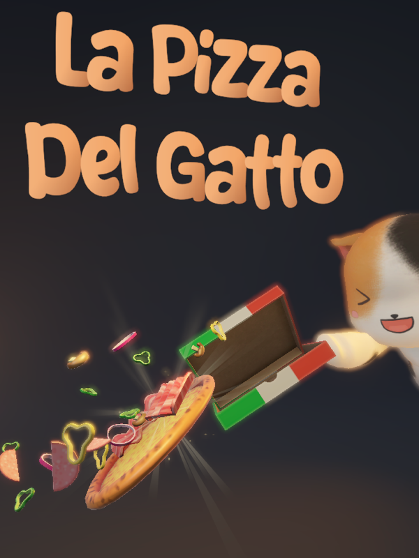
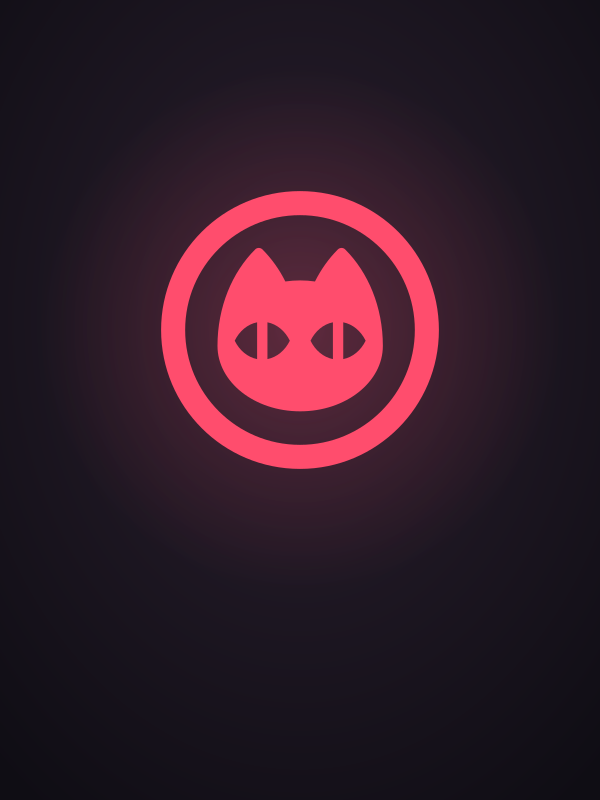
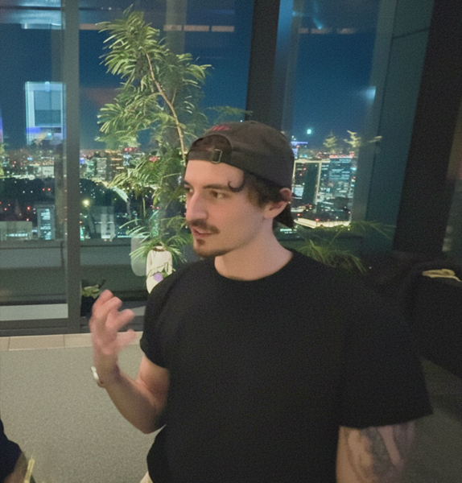
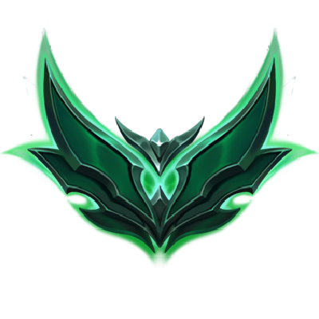

La Pizza Del Gatto
on Steam
WikiFighters
wikipedia race game

Meow Arts
best company in the world


LET'S GO KC!I'm Val. I build games and apps from Tokyo.

on Steam
wikipedia race game

best company in the world